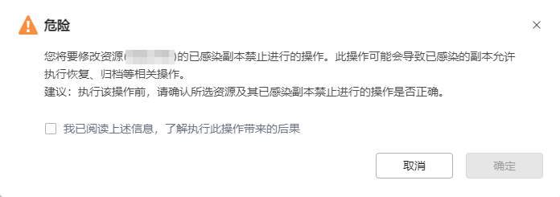

本节介绍如何修改感染副本操作限制。
操作步骤
- 选择“数据安全 > 防勒索 > 防勒索&WORM配置”。
- 单击“感染副本操作限制”。
- 在“感染副本操作限制”页签，选择需要修改限制的一个或多个资源名称，单击“修改限制”。

您还可以单击需要修改限制的资源所在行右侧的“更多”并选择“修改限制”。
- 在弹出的窗口中，选择对已感染的副本禁止执行一种或多种操作，包括：“原位置恢复”、“新位置恢复”、“文件级恢复”、“即时挂载”、“即时恢复”、“下载导出”和“归档”。
- 系统将弹出如下提示，确认提示信息无误后，勾选“我已阅读上述信息，了解执行此操作带来的后果”后，单击“确定”。
